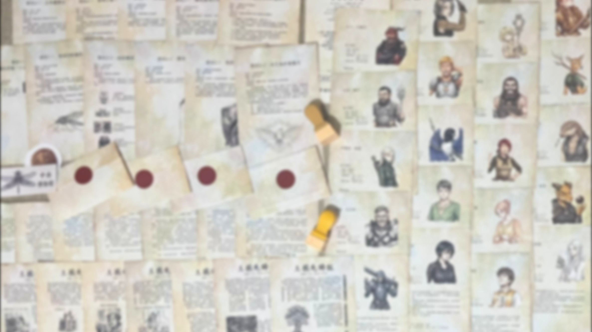

寶島冒險公會
本格推理 ｜ 角色調派推理遊戲
你是寶島冒險公會新上任的調遣師。每一週，公會都會送來新的委託與一疊冒險者履歷。誰的能力最合適？誰的厭惡會毀掉任務？從履歷、訪談、信件、報紙與道具中蒐集線索，為每個委託找出唯一最佳的人選，並揭開這座島嶼背後的真相。
你不是偵探，是櫃檯人員
但每一張派遣單都是一場推理
以履歷、委託、信件、報紙與道具構成的16個任務，把「找出最適合的人選」變成一場完整的本格推理。
新人調遣師的三條守則
會長在入職信裡只留下簡單的原則，真正的難題，在於如何理解它們。
喜好看看就好，厭惡絕對避免
每位冒險者都有自己的喜好與地雷。可以勉強的是喜好，不能碰的是厭惡。一次疏忽，整個任務就可能失敗。
委託很模糊，線索在別處
委託書不會把一切說清楚。答案可能藏在信件、報紙、道具，甚至某位冒險者隨口說的一句話裡。
最佳人選，一定存在且唯一
如果找不到，就代表你漏看了什麼。冒險者的自述不一定屬實，你得學會分辨哪些是事實、哪些只是說法。
這款推理遊戲該如何遊玩？
拆封即玩、無需繁複準備。點擊下方影片，掌握完整辦案指南。
研究冒險者的技能、喜好、厭惡，以及訪談中的每一句話。
從委託文件裡找出任務的真正需求與隱藏條件。
會長的來信、王國先鋒報與實體道具，都可能藏著關鍵。
完成派遣後蓋上公務章，等待下週的消息，卡關時可前往提示網站。
寶島冒險公會有什麼不一樣？
| 維度 | 寶島冒險公會 | 實體密室逃脫 | 一般推理劇本遊戲 |
|---|---|---|---|
| 推理核心 | 以「派遣」為核心，找出每個委託的唯一最佳解 | 場景機關與道具解謎 | 多以找出兇手或真相為主 |
| 人數限制 | 1-4 人皆宜，單人也能玩 | 需湊滿多人開團 | 視作品而定 |
| 劇情推進 | 六週連載，前面的線索會在後面回收 | 多為單場一次性體驗 | 視作品而定 |
| 卡關時 | 分級提示網站，最後附完整推理過程 | 由現場人員給予提示 | 視作品而定 |
即將登場的冒險者
每位冒險者都有獨特的能力、癖好與地雷。
記住：他們說的話，不一定全是真的。
布倫希爾德・銅鬚
自稱「百年難得一遇的天才」，只接最有名望的英雄級委託，閃亮的鎧甲格外引人注目。
伊格妮絲・蓋亞
脾氣火爆，能讓大地升起岩壁，最討厭的兩樣東西是水災與笨蛋。
杜爾加・裂岩
自稱曾是上個世紀古都大戰的工兵隊隊長，擅長雕刻，愛講過去的故事。
卡隆・泥爪
瀕臨絕種的穿山甲，最愛偷東西，其他任務一概沒興趣。
無名
一副會說話的骨頭架子，連自己的名字都不想提，只想開心地接任務。
克里斯・李
武器是一枝便宜的鉛筆，討厭戰鬥、討伐，甚至討厭「完成委託」，卻堅稱自己能解決任何問題。
開發進度
《寶島冒險公會》仍在開發中，留下您的 Email，正式開放訂購時我們會第一時間通知您。
- 六週劇本與謎題設計：已完成
- 實體內容物製作：已完成
- 宣傳與教學影片拍攝：已完成
- 正式開放訂購：敬請期待